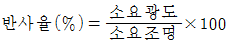
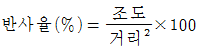
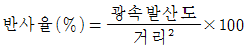
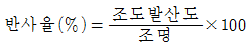
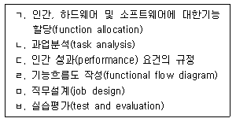
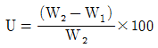
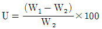
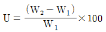
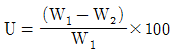

실내건축기사(구) (2006-05-14 기출문제)
1과목: 실내디자인론
1. 다음의 실내디자인 용어에 대한 설명 중 옳지 않은 것은?
- 조닝(zoning) - 공간의 구역구분
- 다운라이트(down light) - 매입형 조명
- 그리드 프래닝(grid planning) - 규칙적인 패턴에 의한 계획
- 휴먼스케일(human scale) - 실내설계용 자
(정답률: 84%)

2. 다음 중 모듈에 관한 설명으로 적합한 것은?
- 모듈은 가구류나 내부벽체에도 적용이 가능하나 융통성 있는 평면계획은 어렵다.
- 모듈을 설정하여 계획을 전개시키면 설계 작업이 단순화되어 용이하고 재료의 생산비용을 낮출 수 있다.
- 모듈이란 일종의 치수 특정단위로서 계획자가 정하는 절대적, 추상적인 기준의 단위이다.
- 근대적인 건축이나 디자인에 있어서 모듈의 단위는 프랭크 로이드 라이트가 황금비를 인체에 적용하여 만든 것이다.
(정답률: 85%)
3. 실내 디자이너가 프로젝트의 수주를 위해 고객(client)과 접촉시 고려해야 할 사항이 아닌 것은?
- 고객의 요구사항을 정확하게 파악
- 포트폴리오, 질문서 준비
- 고객에 대한 다양한 자료수집
- 고객과는 간접적으로만 접촉하여 취향을 객관성 있게 파악
(정답률: 100%)
4. 평면이 돌출된 형태의 창으로 장식품을 두거나 간이 휴식 공간을 마련할 수 있는 창을 무엇이라 하는가?
- 베이 윈도우(bay window)
- 픽쳐 윈도우(picture window)
- 윈도우 월(window wall)
- 고창(clerestory)
(정답률: 85%)
5. 실내공간 요소 중 3차적 요소(심미적 요소)는?
- 악세사리
- 가구
- 색채 및 조명
- 계단 및 경사로
(정답률: 53%)
6. 실내 기본요소 중 천장에 관한 설명으로 옳은 것은?
- 천장을 낮추면 친근하고 아늑한 공간이 되고 높이면 확대감을 줄 수 있다.
- 바닥이나 벽에 비해 접촉빈도가 높으며 공간의 크기와 관련한다.
- 천장재로 많이 쓰이는 것은 회반죽, 직물, 타일, 페인트 등이 있다.
- 환기, 열, 빛, 환경과 직접적으로 관여하지는 않는다.
(정답률: 89%)
7. 디자인이 적용되는 공간과 공간 내에 배치되는 물체들 상호간에 유지되어야 할 적정크기의 관계 등을 나타내는 디자인 원리는?
- 모듈
- 균형
- 황금비례
- 척도
(정답률: 32%)
8. 이질(異質)의 각 구성요소들이 전체로서 동일한 이미지를 갖게 하는 것으로, 변화와 함께 모든 조형에 대한 미의 근원이 되는 원리는?
- 통일
- 반복
- 리듬
- 균형
(정답률: 75%)
9. 다음 중 조명에 관한 설명이 옳지 않은 것은?
- 국부 조명은 어떤 한 건축적인 요소에 초점을 집중시킬 때나, 하나의 실에서 영역을 구획할 때도 사용된다.
- 전반, 국부 겸용 조명은 공간 자체에 변화와 생동감을 주지는 않지만 실 전체를 평균적으로 밝고 온화한 분위기로 만든다.
- 올바른 실내조명은 조명의 질, 색, 조도가 적절한 균형을 이루어야 한다.
- 장식조명은 조명기구 자체가 하나의 예술품과 같이 강조되거나 분위를 살려주는 역할을 한다.
(정답률: 77%)
10. 공간의 목적이나 행위가 비교적 자유로운 장소에 좋으며, 자칫하면 혼란스러우나 편안한 느낌을 주기도하는 가구 배치 방법은?
- 분산적 가구배치
- 집중적 가구배치
- 붙박이 가구배치
- 부분적 가구배치
(정답률: 71%)
11. 배경과 실물의 종합전시에 적합한 전시방법은?
- 파노라마 전시
- 디오라마 전시
- 아일랜드 전시
- 하모니카 전시
(정답률: 67%)
12. 다음의 벽에 관한 설명 중 틀린 것은?
- 높이 1,800mm 정도의 벽은 시각적으로는 차단되나 프라이버시를 유지하기 힘들다.
- 높이 1,500mm 정도의 벽은 두 공간의 상호 통행이 어려우며 에워싼 느낌을 준다.
- 높이 1,200mm 정도의 벽은 시각적으로 개방되고 에워싼 느낌을 준다.
- 높이 600mm 이하의 벽은 상징적 분리이다.
(정답률: 92%)
13. 다음의 선의 조형효과에 대한 설명 중 옳은 것은?
- 수평선은 높이, 깊이, 엄숙, 영원을 나타낸다.
- 수직선은 영원, 발전, 안정감, 고요함, 휴식감을 나타낸다.
- 사선은 정적이며, 강하고 단순하고 직접적이다.
- 곡선은 유연, 우아, 풍요, 여성스런 느낌을 준다.
(정답률: 89%)
14. 개방식 배치의 한 형식으로 업무와 환경을 경영관리 및 환경적 측면에서 개선하여 배치를 의사전달과 작업 흐름의 실제적 패턴에 기초를 두는 사무소 실 단위 계획은?
- 싱글 오피스(single office)
- 아트리움(atrium)
- 오피스 랜드스케이프(office landscape)
- 스마트 시스템(smart system)
(정답률: 87%)
15. 다음 중 고딕양식의 성당에 적용된 디자인 원리와 가장 거리가 먼 것은?
- 균형
- 비례
- 율동
- 반복
(정답률: 78%)
16. 연속적인 주제를 연관성 깊게 표현하기 위해 시간적인 연속성을 가지고 선형(線形)으로 연출하는 전시로 전시의 맥락이 중요하다고 판단될 때 사용하는 전시의 기법은?
- 디오라마식 전시
- 아일랜드식 전시
- 파노라마식 전시
- 하모니카식 전시
(정답률: 70%)
17. 오피스 오토메이션(office automation)의 기본 개념이 아닌 것은?
- 가구의 조립화
- 정보의 효율화
- 사무작업의 기계화
- 사무의 합리화
(정답률: 50%)
18. 비대칭형 균형에 대한 설명 중 잘못된 것은?
- 물리적으로 균형이지만 시각적인 무게나 시선을 끄는 정도가 불균형을 이루는 것이다.
- 진취적이고 긴장된 생명감각을 느끼게 한다.
- 능동적이며 비형식적인 느낌을 준다.
- 대칭균형보다 자연스런 균형의 형태이다.
(정답률: 32%)
19. 동선계획의 3요소가 아닌 것은?
- 빈도
- 속도
- 재료
- 하중
(정답률: 83%)
20. 기하학적 형태의 특징이 아닌 것은?
- 수리학적 법칙과 함께 생기며 가장 뚜렷한 질서를 가지고 있다.
- 자연적 형태보다는 인공적 형태의 특징을 갖는다.
- 유기적 형태와 유사한 형태를 가진다.
- 규칙적이며 명쾌한 감각을 준다.
(정답률: 43%)
2과목: 색채학
21. 후기 인상파 화가인 쇠라(seurat)의 회화원리로 사용된 기법은?
- 색료혼합
- 보색혼합
- 회전혼합
- 병치혼합
(정답률: 62%)
22. 먼셀 표색계의 내용에 관한 설명 중 잘못된 것은?
- R, Y, G, B, P의 5색과 그 보색인 5색을 추가하여 10색상을 기본으로 만든 것이다.
- 무채색의 명도는 숫자 앞에 ‘N'을 붙인다.
- 채도 단위는 2단위를 기본으로 하였으나 저채도 부분에서는 실용적으로 1과 3을 추가하였다.
- 유채색의 명도는 0.5 단위로 배열되어 0.5부터 9.5까지 19단계로 하였다.
(정답률: 32%)
23. 문∙스펜서의 조화분류에서, 미도(美度)를 설명한 것 중 잘못된 것은?
- 균형잡힌 무채색의 배색은 유채색 못지않은 미도를 나타낸다.
- 동일색상의 조화는 매우 좋은 느낌의 미도를 나타낸다.
- 같은 명도의 조화는 미도가 높다.
- 동일색상, 동일채도의 단순한 디자인은 복잡한 디자인 보다 좋은 조화가 될 때가 많다.
(정답률: 73%)
24. 7VR에 대한 설명으로 옳은 것은?
- V와 R의 중간색상으로 R에 더 가깝다.
- V와 R의 같은 비율로 혼합되어 있다.
- V와 R의 중간색상으로 V에 더 가깝다
- 직관적 표기법으로 알 수가 없다.
(정답률: 72%)
25. 다음 설명 중에서 옳은 것은?
- 일반적으로 조화는 질서있는 배색에서 생긴다.
- 문스펜서 조화론은 오스트발트 표색계를 사용한 것이다.
- 색채의 조화부조화는 주관적인 것이기 때문에 인간 공통의 어떠한 법칙을 찾아내는 것은 불가능 하다.
- 오스트발트 조화론은 CIE표색계를 사용한 것이다.
(정답률: 65%)
26. 다음 색상 중 가장 온도감이 높은 난색으로 식당, 침실 등에 사용하여 안락한 분위기 연출에 좋은 색상은?
- 청록색
- 파랑색
- 노랑색
- 주황색
(정답률: 44%)
27. 이웃한 색이 서로 인접한 부근에서 더 강한 대비가 느껴지는 현상은?
- 푸르킨예 현상
- 연변대비
- 계시대비
- 한난대비
(정답률: 33%)
28. 비렌의 조화론에서 사용되는 색조군에 대한 설명 중 옳은 것은?
- 흰색과 검정이 합쳐진 밝은 색조(Tint)
- 순색과 흰색이 합쳐진 톤(Tone)
- 순색과 검정이 합쳐진 어두운 색조(Shade)
- 순색과 흰색 그리고 검정이 합쳐진 회색조(Gray)
(정답률: 48%)
29. 다음 중 회전 혼합과 관계가 없는 것은?
- 가법 혼합
- 색광 혼합
- 색료 혼합
- 중간 혼합
(정답률: 50%)
30. 다음 중 동화효과와 관련이 없는 것은?
- 베졸드 효과
- 전파효과
- 혼색효과
- 하만그리드 효과
(정답률: 53%)
31. 하늘의 색은 넓이의 느낌은 있으나 거리감이 없고 물체감 없이 순수한 색 자체만을 느끼게 한다. 이러한 색이 나타나는 양상을 무엇이라고 하는가?
- 광원색
- 면색
- 공간색
- 표면색
(정답률: 67%)
32. 다음 중 식욕을 돋구어 주는 배색은?
- 초록 접시 위 생선구이 요리
- 보라색 접시 위 분홍 장식의 고기요리
- 흰색 접시 위 붉은색 김치
- 검정 접시 위 파란 물들인 어묵
(정답률: 92%)
33. 색의 감정 효과에 대한 설명 중 타당성이 가장 낮은 것은?
- 청색은 여름에 사용하면 시원하게 보이는 효과를 얻을 수 있다.
- 봄에는 녹색이 황색보다 가볍게 보인다.
- 겨울에 하얀 코트보다 검은 코트가 더 따뜻하게 보인다.
- 가벼운 물건이라도 어두운 색으로 포장하면 무겁게 보인다.
(정답률: 77%)
34. 색채디자인의 목적으로 적합하지 않은 것은?
- 상품의 이미지를 보다 효과적으로 만들어 낸다.
- 사용자의 감성적 요구를 반영하여 상품 구매율을 높인다.
- 색채의 체계적인 사용을 통하여 상품의 부가가치를 높인다.
- 최대한 다양한 색상 조합을 통하여 소비자의 시선을 유도한다.
(정답률: 72%)
35. 다음 중 소극적인 인상을 주는 것이 특징으로 중 명도 중채도인 중간색계의 덜(dull)톤을 사용하는 배색기법은?
- 포 까마이외 배색
- 까마이외 배색
- 토널 배색
- 톤 온 톤 배색
(정답률: 80%)
36. 색채관리시 효율적으로 쓰이고 있는 CCM의 특징과 거리가 먼 것은?
- 컬러런트와 관계없이 염료나 도료를 섞는 방식이 장점이고, 메타메리즘이 발생할 수 있는 것은 단점이다.
- 색채관리에 있어 사람의 눈이나 광원에 의한 오차들을 배제할 수 있다.
- 컴퓨터 외에 분광 측색기, 소트르웨어 등의 구성이 필요하다.
- 염료와 조제의 정리 및 표준화가 가능하다.
(정답률: 39%)
37. 오스트발트 표색계의 색표기 방법인 ‘8pa′ 중 ′p′ 의미하는 것은?
- 색상기호
- 흑색량
- 백색량
- 순색량
(정답률: 63%)
38. 다음 중 횃불놀이, TV나 영화 등에서 나타나는 색의 현상은?
- 정의 잔상
- 부의 잔상
- 색의 대비
- 색상 동화
(정답률: 87%)
39. 용도별 실내색채에 관한 다음 설명 중 잘못된 것은?
- 한색계의 공간은 정신적 활동에 적합하다.
- 병원 수술실에 가장 많이 쓰이는 색은 녹색이다.
- 공장에서 안전이 요구되는 부위에는 KS에 규정된 안전 색채를 써야 한다.
- 사무실 벽은 순백색으로 배색한 것이 눈의 피로를 줄여서 좋다.
(정답률: 80%)
40. 오팔 원석이나, 컴팩트 디스크 등 금속이나, 유리, 복석 등에 나타나는 색채현상은?
- 반사에 의한 간섭현상
- 흡수에 의한 반사현상
- 간섭에 의한 산란현상
- 산란에 의한 회절현상
(정답률: 53%)
3과목: 인간공학
41. 빛의 반사율에 관한 공식이 올바른 것은?




(정답률: 32%)
42. 사람이 정확하고 정밀한 동작을 수행하기 위해 근육들이 반대 방향으로 작용을 하며 정적인 반응을 보이는데 이때 근육의 잔잔한 떨림(진전,振顫)이 일어난다. 다음 중 진전을 감소시킬 수 있는 방법이 아닌 것은?
- 시각적인 참조
- 몸과 작업에 관계되는 부위를 잘 받친다.
- 손이 심장높이보다 높게 있을 때가 손떨림이 적다.
- 작업 대상물에 기계적인 마찰이 있을 때
(정답률: 48%)
43. 자극간의 차이를 알 수 있는 것과 알 수 없는 것의 한계에 있는 자극 변화량을 말하는 것은?
- 변별역
- 정비역
- 자극역
- 등치역
(정답률: 55%)
44. 다음 중 관절운동의 정의로 맞는 것은?
- 내선(medial rotation) : 신체의 중앙에서 바깥으로 회전하는 운동
- 외선(lateral rotation) : 신체의 바깥에서 중앙으로 회전하는 운동
- 외전(abduction) : 관절에서의 각도가 감소하는 인체 부분의 동작
- 내전(adduction) : 신체의 부분이 신체의 중앙이나 그것이 붙어있는 방향으로 움직이는 동작
(정답률: 84%)
45. 다음 중 올바른 단위는?
- 휘도 : 와트(watt)
- 조도 : 루멘-아워(lumen=hour)
- 광속 : 루멘(lumen)
- 광량 : 럭스(lux)
(정답률: 62%)
46. 연속적으로 변화하는 값을 표시하기에 가장 적합한 표시 장치(display)는?
- 동침형 (moving pointer)
- 동목형 (moving scale)
- 계수형 (digital)
- 회화형 (pictogram)
(정답률: 알수없음)
47. 시 식별에 영향을 주는 조건이 아닌 것은?
- 색온도 (color temperature)
- 대비 (contrast)
- 조도 (illuminance)
- 휘광 (glare)
(정답률: 34%)
48. 페달을 밟을 때 큰 힘을 필요로 한다. 다음 중 가장 알맞은 설계 방법은?
- 발바닥 전체로 밟도록 설계
- 발 끝만으로 밟도록 설계
- 발 뒷꿈치로 밟도록 설계
- 발 앞부분으로 밟도록 설계
(정답률: 53%)
49. 인간공학 연구의 3가지 기준 요건과 거리가 먼 것은?
- 적절성
- 무오염성
- 기준척도의 신뢰성
- 진행성
(정답률: 34%)
50. 다음 중 음에 관한 단위가 아닌 것은?
- Phon
- Sone
- dB
- Lux
(정답률: 80%)
51. 미각을 느끼는 혀의 기능 중 혀의 안쪽에서 느끼는 맛은?
- 단맛
- 쓴맛
- 짠맛
- 신맛
(정답률: 74%)
52. 음원의 위치를 입체적으로 파악할 수 있는 이유는?
- 소리의 은폐 때문
- 소리의 강도차이 때문
- 소리의 위상차이 때문
- 소리의 주파수 차이 때문
(정답률: 17%)
53. 감각기관을 통하여 환경의 자극에 대한 정보를 감지하여 받아들이는 과정은?
- 지각
- 순응
- 청각
- 반응
(정답률: 70%)
54. 주파수가 같거나 배수인 다른 음을 만나서 음량이 증폭되는 현상은?
- 은폐(masking)
- 공명(resonance)
- 간섭(interference)
- 감쇠(damping)
(정답률: 58%)
55. 흰 글자와 검은 글자의 최적 획폭비에 관한 것으로 틀린 것은?
- 글자의 색에 따라 최적 획폭비가 다른 것은 광삼현상(irradiation) 때문이다.
- 검은 바탕에 흰 글자의 획폭이 흰 바탕에 검은 글자의 경우보다 가늘어야 한다.
- 흰 바탕에 검은 글자의 획폭이 검은 바탕에 흰 글자의 경우보다 가늘어야 한다.
- 조도가 높을수록 흰 모양이 검은 배경으로 더욱 번져 보인다.
(정답률: 53%)
56. 시스템을 개발하는 전형적인 3단계인 기본설계 단계에서 인간공학적 활용에 해당하는 것을 보기에서 모두 고른 것은?

- ㄱ.ㄴ.ㅁ.ㅂ
- ㄱ.ㄴ.ㄷ.ㅁ
- ㄴ.ㄷ.ㄹ.ㅁ
- ㄷ.ㄹ.ㅁ.ㅂ
(정답률: 33%)
57. 작업장 내의 기후는 작업능률을 향상시켜 생산을 높이는데 중요한 요인이 된다. 기온이 너무 높을 경우 일어나는 반응 중 잘못된 것은?
- 체온의 상승
- 심장활동의 감소
- 작업능률의 감퇴
- 졸음이 온다.
(정답률: 80%)
58. 다음 조명과 관련된 설명 중 가장 올바른 것은?
- 실내의 빛을 효과적으로 배분하기 위해서는 반사율이 높은 표면이 좋다.
- 주어진 장소와 주위의 광도비는 사무실에서 보통 3:1이다.
- 실내 면의 추천 반사율이 천장에서 바닥으로 갈수록 증가하는 것이 좋다.
- 광원으로부터의 직사휘광을 처리하는 방법은 광원의 휘도를 늘리고 수를 줄인다.
(정답률: 50%)
59. 서서 일할 때의 작업대 높이는 작업의 종류에 따라 달라진다. 다음 중 작업내용에 따른 작업대의 높이가 높은 것에서 낮은 순으로 맞게 배치된 것은?
- 경작업 - 정밀작업 - 중작업
- 정밀작업 - 경작업 - 중작업
- 중작업 - 경작업 - 정밀작업
- 정밀작업 - 중작업 – 경작업
(정답률: 24%)
60. 외부의 자극과 인간의 기대가 서로 모순되지 않아야 하는 것을 무엇이라 하는가?
- 중복성 (redundancy)
- 일관성 (consistency)
- 양립성 (compatibility)
- 표준화 (standardization)
(정답률: 69%)
4과목: 건축재료
61. 집성재(集成材)에 관한 설명 중 부적당한 것은?
- 충분히 건조된 건조재를 사용하므로 비틀림, 변형등이 생기지 않는다.
- 대단면, 만곡재 등 임의의 단면형상을 갖는 인공목재를 비교적 용이하게 제작할 수 있다.
- 여러 개의 작은 단면을 합칠 때는 합판과 같이 섬유 방향을 직교(直交)시킨다.
- 제재품이 가진 옹이 등의 결점을 분산시키므로 강도의 편차가 적다.
(정답률: 63%)
62. 시멘트에 약간의 물을 첨가하여 혼합시키면 가소성 있는 페이스트가 얻어지나 시간이 지나면 유동성을 잃고 응고하는데 이러한 현상을 무엇이라 하는가?
- 응결
- 풍화
- 중성화
- 백화
(정답률: 71%)
63. 다음의 비철금속에 대한 기술 중 옳은 것은?
- 동은 맑은 물에서는 녹이 나지 않으나 염수에서는 부식된다.
- 황동은 청동과 비교하여 주조성이 우수하고 내식성도 더욱 좋다.
- 알루미늄은 융점이 높기 때문에 용해 주조도가 좋지 않다.
- 순도가 높은 알루미늄일수록 내식성과 전연성이 작아진다.
(정답률: 50%)
64. 소석회에 모래, 해초풀, 여물 등을 혼합하여 바르는 미장 재료로서 목조바탕, 콘크리트블록 및 벽돌 바탕 등에 사용되는 것은?
- 회반죽
- 돌로마이트 플라스터
- 석고 플라스터
- 시멘트 모르타르
(정답률: 80%)
65. 1종 점토벽돌의 압축강도는 최소 얼마 이상이어야 하는가? (1kgf = 9.80N)
- 5.87 N/mm2
- 10.78 N/mm2
- 15.69 N/mm2
- 20.59 N/mm2
(정답률: 32%)
66. 다음의 단열재료에 대한 설명 중 옳지 않은 것은?
- 일반적으로 다공질의 재료가 많다.
- 같은 두께인 경우 경량재료인 편이 단열에 더 효과 적이다.
- 열전도율이 높을수록 단열성능이 좋다.
- 단열재료의 대부분은 흡음성도 우수하므로 흡음재료로서도 이용된다.
(정답률: 79%)
67. 건축용으로는 박판으로 제작하여 지붕재료로 이용되며, 못 등으로도 이용되나 알칼리성에 약하므로 시멘트 콘크리트등에 접하는 곳에서는 부식의 속도가 빠르므로 주의하여야 하는 비철금속은?
- 동
- 납
- 주석
- 니켈
(정답률: 39%)
68. 점토제품에서 SK번호란 무엇을 뜻하는가?
- 소성온도를 표시
- 점토원료를 표시
- 점토제품의 종류를 표시
- 점토제품 제법 순서를 표시
(정답률: 65%)
69. 미경화 콘크리트의 성질에 있어 주로 수량(水量)에 의하여 변화하는 콘크리트의 유동성의 정도를 나타내며 시공연도에 큰 영향을 미치는 것은?
- 블리딩 (bleeding)
- 플라스티시티 (plasticity)
- 콘시스턴시 (consistency)
- 피니셔빌리티 (finishability)
(정답률: 알수없음)
70. 굵은 골재의 단위용적중량이 1.7kg/L, 절건비중이 2.65일 때, 이 골재의 공극율은?
- 25%
- 28%
- 36%
- 42%
(정답률: 57%)
71. 목재 중의 수분량은 함수율로 표시한다. 함수율을 올바르게 나타낸 것은? (단, U : 함수율, W1 : 시험편의 건조 전 중량, W2 : 시험편의 건조 후 중량)




(정답률: 알수없음)
72. 다음의 미장재료에 관한 설명 중 옳지 않은 것은?
- 석고플라스터는 물과 결합하여 경화하기 때문에 경화 속도가 늦고 수축률이 크다.
- 돌로마이트 플라스터는 공기 중의 탄산가스와 결합하여 경화한다.
- 회반죽 바름은 일반적으로 연악하고 비내수성이다.
- 시멘트 모르타르는 시멘트를 결합재료 하고 모래를 골재로하여 이를 물과 혼합하여 사용하는 수경성 미장 재료이다.
(정답률: 28%)
73. 에폭시수지 접착제에 대한 설명으로 옳지 않은 것은?
- 금속, 석재, 도자기의 접착에 사용이 가능하다.
- 급경성이며 내화학성이 크다.
- 접착력이 크고 내수성이 우수하다.
- 내알칼리성이 적어 콘크리트에는 사용할 수 있다.
(정답률: 64%)
74. 미장용 혼화재료 중 착색을 목적으로 하는 착색재에 속하는 않는 것은?
- 합성산화철
- 카본블랙
- 염화칼슘
- 이산화망간
(정답률: 19%)
75. 투명도가 높으므로 유기유리라는 명칭이 있으며, 착색이 자유롭고 내충격강도가 크고 평판, 골판 등의 각종 형태의 성형품으로 만들어 채광판, 도어판, 칸막이벽 등에 쓰이는 합성수지는?
- 폴리스티렌수지
- 에폭시수지
- 요소수지
- 아크릴수지
(정답률: 72%)
76. 다음 중 합성수지의 일반적인 성질에 대한 설명으로 옳지 않은 것은?
- 착색이 자유롭고 가공성이 우수하다.
- 내열성, 내화성이 적고 비교적 저온에서 연화, 연질된다.
- 전성, 연성이 작아 표면에 상처가 나기 쉽다.
- 내산, 내알칼리 등의 내화학성 및 전기절연성이 우수하다.
(정답률: 58%)
77. 다음의 석재에 관한 기술 중 옳은 것은?
- 사암 중 일반적으로 규산질 사암이 가장 강하고 내구성이 크나 가공이 어렵다.
- 안산암은 강도는 크지만 내화성이 좋지 않아 구조용 석재로 사용할 수 없다.
- 대리석은 트래버틴이 변화되어 결정화한 것으로 주성분은 SiO2 이다.
- 화강암은 수성암으로 응회함보다 흡수율이 크다.
(정답률: 25%)
78. 목재가 통상 대기의 온도, 습도와 평형된 수분을 함유한 상태의 함수율은?
- 약 7%
- 약 15%
- 약 20%
- 약 30%
(정답률: 39%)
79. 다음의 금속제품에 대한 설명 중 옳지 않은 것은?
- 메탈 라스(Metal lath)는 박강판에 구멍을 뚫어 그물처럼 만든 것으로 천장, 벽 등의 미장 바탕에 사용한다.
- 조이너(Joinner)는 계단의 디딤판 끝에 대어 오르내릴 때 미끌어지지 않도록 하는 철물로서 미끄럼 막이라고도 한다.
- 코너 비드(Corner Bead)는 벽, 기둥 등의 모서리 부분에 미장 바름을 보호하기 위한 것으로 모서리 쇠라고도 한다.
- 메탈 폼(Metal Form)은 금속재의 콘크리트용 거푸집으로서 치장콘크리트에 사용된다.
(정답률: 89%)
80. 접착제의 분류에서 페놀, 요소, 멜라민 수지 등과 같이 가열하면 경화하는 특성이 있고, 합판이나. 파티클보드 등의 목질 재료 제조시의 공장용 접착제로 많이 사용되는 것은?
- 용제형 접착제
- 열경화성 수지계 접착제
- 열가소성 접착제
- 에멀젼계 접착제
(정답률: 34%)
5과목: 건축일반
81. 조적조에서 테두리보를 설치하는 이유로 틀린 것은?
- 수직균열을 방지한다.
- 가로철근을 정착한다.
- 벽체에 하중을 균등히 분포시킨다.
- 집중하중을 받는 부분을 보강한다.
(정답률: 65%)
82. 바우하우스 디자인의 특성이 아닌 것은?
- 통일된 예술작업의 추진과 제품의 균질성 추구
- 인간적인 감각을 중시
- 혁신적인 재료사용
- 기계특성에 맞는 수평과 수직의 직선적 구성
(정답률: 38%)
83. 철골구조의 접합병용에 대한 설명 중 틀린 것은?
- 한 접합부에 고력볼트와 리벳을 병용했을 때는 각각의 허용력에 분담시킨다.
- 한 접합부에 고력볼트와 볼트를 병용했을 때 전응력은 고력볼트가 부담한다.
- 한 접합부에 리벳과 용접을 병용했을 때 전응력은 용접이 부담한다.
- 한 접합부에 리벳과 볼트를 병용했을 때 전응력은 볼트가 부담한다.
(정답률: 29%)
84. 피난구 유도등은 피난구의 바닥으로부터 최소 얼마 이상의 높이에 설치하여야 하는가?
- 0.5m
- 1.0m
- 1.5m
- 2.0m
(정답률: 29%)
85. 계단의 벽에 손잡이를 설치하여야 할 경우 벽으로부터 최소 얼마 이상 떨어져 설치해야 하는가?
- 3cm
- 5cm
- 8cm
- 10cm
(정답률: 75%)
86. 6층 이상의 거실면적의 합계가 12,000m2인 교육연구 및 복지시설에 설치하여야 할 승용승강기의 설치기준은 최소 몇 대인가? (단, 8인승 기준)
- 2대
- 3대
- 4대
- 5대
(정답률: 알수없음)
87. 다음의 목구조에 관한 설명 중 옳은 것은?
- 가새는 목조 벽체를 수평력에 견디게 하고 안정한 구조로 하기 위해 사용된다.
- 평기둥은 2개층을 1개의 통재로 사용한 기둥이다.
- 마루널의 쪽매에는 숨은 못치기를 한 빗쪽매가 가장 널리 쓰인다.
- 큰 응력을 받는 접합부에는 보강철물을 사용하지 않는다.
(정답률: 77%)
88. 다음 중 건축구조의 분류상 가구식 구조에 속하는 것은?
- 시멘트 블록 구조
- 벽돌 구조
- 철근콘크리트 구조
- 철골 구조
(정답률: 34%)
89. 철근콘크리트구조의 띠철근 압축부재 단면의 최소치수는?
- 150mm
- 200mm
- 250mm
- 300mm
(정답률: 47%)
90. 철골조의 판보(plate girder)에서 웨브의 좌굴을 방지하기 위하여 사용하는 것은?
- 커버 플레이트
- 베이스 플레이트
- 스티프너
- 사이드앵글
(정답률: 41%)
91. 다음의 목재 이음 중 구부림(휨)에 가장 효과적이며 휨을 받는 가로재의 내 이음에 주로 사용되는 것은?
- 주먹장 이음
- 메뚜기장 이음
- 빗걸이 이음
- 엇걸이 이음
(정답률: 69%)
92. 건축물에서 이용하는 비상용 승강기의 승강장에 설치하는 배연설비의 구조에 대한 설명 중 옳지 않은 것은?
- 배연구에는 반드시 외기에 접하여 설치해야 한다.
- 배연기에는 예비전원을 설치해야 한다.
- 배연구 및 배연풍도는 불연재료로 해야 한다.
- 배연구에 설치하는 자동개방장치는 손으로도 열고 닫을 수 있도록 해야 한다.
(정답률: 31%)
93. 실내 벽 하부에서 높이 1~1.5m 정도로 널을 댄것으로 밑부분을 보호하고 장식을 겸한 용도로 사용되는 것은?
- 걸레받이
- 고막이
- 징두리벽
- 코펜하겐 리브
(정답률: 50%)
94. 공동주택과 오피스텔의 난방설비를 개별난방방식으로 하는 경우 옳은 기준은?
- 보일러의 연도는 개별연도로 설치한다.
- 보일러실의 공기 흡입구와 배기구는 사용 중이지 않을 경우는 닫힌 구조로 한다.
- 기름저장소는 보일러실 내부에 배치시키고 거실과는 내화구조의 벽으로 구획한다.
- 보일러실과 거실 사이의 경계벽은 출입구를 제외하고는 내화구조의 벽으로 구획한다.
(정답률: 39%)
95. 기둥의 중간 부분이 가늘어 보이는 착시현상을 교정하기 위해 기둥을 약간 배부르게 처리하여 시각적으로 안정감을 부여하는 수법은?
- 콜로네이드(Colonade)
- 아케이드(Arcade)
- 니치(Niche)
- 엔타시스(Entasis)
(정답률: 65%)
96. 제2종 근린생활시설중 일반음식점 및 휴게음식점의 조리장의 경우 방습을 위해 바닥으로부터 높이 얼마까지의 안벽의 마감을 내수재료로 하여야 하는가?
- 0.5m
- 0.7m
- 1.0m
- 1.5m
(정답률: 65%)
97. 다음 중 포스트 모더니즘 건축의 특성과 가장 관계가 먼 것은?
- 과거와 현대양식의 조합
- 복합성과 모호성
- 기호론적 형태
- HIGH-TECH와 신기술
(정답률: 60%)
98. 다음 중 조선시대 살림집의 실내외 공간 및 입면적인 특징과 가장 관계가 먼 것은?
- 외부공간이 면(面)적인 반면 내부공간은 선(線)적으로 구성되어 있다.
- 외부공간이 폐쇠성을 지닌 반면 내부공간은 개방성을 가지고 있다.
- 실내공간에서 프라이버시를 확보할 수 있는 물리적인 차폐시설이 서양보다 약한 편이다.
- 공간은 계층 및 세대 간의 위계질서에 의해 구분된다.
(정답률: 42%)
99. 특수장소에 사용하는 실내 장식물로서 방염 성능이 없어도 되는 제품은?
- 전시용 섬유판
- 무대막
- 종이벽지
- 카페트
(정답률: 45%)
100. “Less is More"와 Universal Space(보편적 공간)의 개념을 주장한 건축가는 누구인가?
- 프랭크 로이드 라이트
- 르 코르비제
- 미스 반 데어 로에
- 루이스 설리반
(정답률: 62%)
6과목: 건축환경
101. 태양광선에 관한 설명 중 옳지 않은 것은?
- 태양광선에 일명 화학선이라고 하며, 특히 420~450nm의 자외선을 건강선이라고 한다.
- 조명학적 의미를 갖는 광선을 가시광선이라고 한다.
- 파장이 가장 긴(770~4000nm)광선을 적외선이라고 한다.
- 열적 효과를 갖는 태양광선은 적외선이다.
(정답률: 38%)
102. 배수관에 설치되는 트랩 내의 봉수 깊이로서 가장 적절한 것은?
- 50mm이하
- 50 - 100mm
- 150 - 200mm
- 200mm 이상
(정답률: 54%)
103. 건축의 열 환경에 대한 인체의 반응에 영향을 주는 요소 중 개인적 변수(Personal variable)가 아닌 것은?
- 기온(air temperature)
- 착의량(clothing)
- 성별(sex)
- 활동량(activity)
(정답률: 26%)
104. Andersen Sampler에 관한 설명으로 옳은 것은?
- 환기량 측정장치
- 가스종류 분석기
- 부유분진 측정장치
- VOCs 측정장치
(정답률: 25%)
1⑤. 음향계획이 요구되는 실의 형태계획에 관한 설명 중 틀린 것은?
- 평면계획에서 객석은 실의 중심축으로부터 각각 70°이내에 위치시킨다.
- 부정형, 비대칭형편면은 음 확산을 위하여 대체로 효과가 좋다.
- 일반적으로 음원에 가까운 부분에는 확산성을, 후면에는 반사성을 갖도록 한다.
- 천장이 평행한 경우에는 플러터 에코(fluuter echo_의 발생이 용이하므로 천장을 경사지게 한다.
(정답률: 9%)
106. 건축화 조명시스템에 관한 내용으로 옳지 않은 것은?
- 건축과 조명이 일체화가 이루어진다.
- 실내분위기 연출에 유리하다.
- 조명효율이 대단히 높아진다.
- 설치비용이 비교적 높게 든다.
(정답률: 30%)
107. 다음 실 중 일반적으로 가장 많은 환기회수가 요구되는 실은?
- 주방
- 화장실
- 수술실
- 백화점
(정답률: 34%)
108. 실내 기후조절에서 온도와 습도분포에 관한 설명으로 적당한 것은?
- 실내의 공기온도는 상하방향, 수평방향으로 위치에 따라 거의 변화하지 않는다.
- 실내기후의 쾌적성 판단에서 수직방향의 온도 차가 수평방향의 온도 차보다 중요한 요소이다.
- 난방방법 중 대류식보다 복사식이 상하 온도 차가 크다.
- 쾌적한 실내의 기류 풍속은 1m/s이상이다.
(정답률: 27%)
109. 임의 주파수에서 벽체를 통해 입사 음 에너지의 1%가 투과 하였을 때 주파수에서 벽체의 음 투과 손실은?
- 10dB
- 20dB
- 30dB
- 40dB
(정답률: 50%)
110. 최적 전향 시간은 실의 용도와 용적에 따라 다르다. 다음에서 최적 잔향 시간이 가장 짧은 것이 요구되는 실은?
- 교화음악실
- 강연장
- 영화관
- 학교강당
(정답률: 28%)
111. 강당의 천장에 환기용 디퓨저가 20개가 있다. 디퓨저 1개의 음악레벨이 500Hz에서 30dB일 때 전체 환기구에서 발생하는 음압레벨은 얼마인가?
- 33dB
- 43dB
- 53dB
- 63dB
(정답률: 50%)
112. 다음 설명 중 틀린 것은?
- 겨울철에는 전도에 의하여 벽체, 바닥 지붕을 통하여 열이 손실된다.
- 건물의 실내외 공기사이의 열교환은 침기 또는 환기에 의하여 일어난다.
- 건물의 외피(building envelope)는 기후의 영향을 조절하여 준다.
- 실내의 조명기구는 실내의 열의 손실을 가져온다.
(정답률: 89%)
113. 온수난방 배관에서 리버스리턴(reverse return)방식을 사용하는 이유는?
- 배관길이를 짧게 하기 위해
- 보온을 하기 위해
- 배관의 신축을 흡수하기 위해
- 온수의 유량분배를 균일하게 하기 위해
(정답률: 63%)
114. 어느 음을 듣고자 할 때, 다른 음에 의하여 듣고자 하는 음이 작게 들리거나 아예 들리지 않는 현상은?
- 플러터 에코(Flutter Echo)현상
- 피이드백(Feed back)현상
- 얼룩무늬(Pattern Staining)현상
- 마스킹(Masking)효과
(정답률: 알수없음)
115. 건물내 발전기실에 대한 설명으로 적절하지 않은 것은?
- 부하중심에 가까울 것
- 습기, 먼지가 적은 장소일 것
- 천장높이는 보 아래 3.0m이상일 것
- 안전을 고려하여 축전실과 떨어져 있을 것
(정답률: 40%)
116. 진태양시의 용어설명이 맞는 것은?
- 어느 지방의 태양 남중시에서 다음의 남중시까지를 1일로 하는 시간
- 1일의 길이가 24시간으로 일정하게 된 시간
- 태양시와 평균태양시의 차이 시간
- 균시차와 태양시의 차이 시간
(정답률: 19%)
117. 작용온도(operative Temperature)에서 고려하고 있지 않은 요소는?
- 온도
- 습도
- 기류속도
- 복사열
(정답률: 38%)
118. 다음 용어의 단위로 옳은 것은?
- 열관류율 - kcal/mh
- 열전도율 - Kcal/mh℃
- 음의 세기 - dB
- 비열 - Kcal/℃
(정답률: 7%)
119. 다음 중 자외선의 주작용이 아닌 것은?
- 살균작용
- 화학적 작용
- 생물의 생육작용
- 열과 빛의 제공
(정답률: 39%)
120. 화장실, 욕실, 주방에 가장 적당한 환기방식은?
- 압입, 흡출 병용방식
- 압입환기방식
- 흡출환기방식
- 자연환기방식
(정답률: 50%)